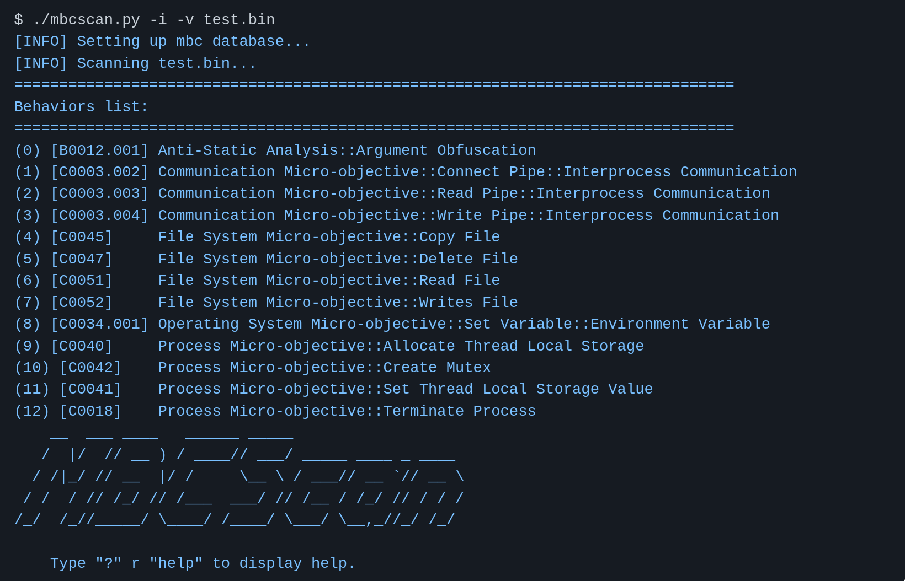

I gave a 10-minute lightning talk at the recently concluded Blackhat Middle East & Africa community meetup. The topic is about Mitre's Malware Behavior Catalog (MBC) framework and the existing tools for it. My reason for selecting this topic is because I feel that more people should know about Mitre's not-so-well-known project.

A brief overview
MBC is a framework made by Mitre, similar to ATT&CK, but focuses on malware. It lists down the common objectives and behaviors commonly seen in malware. The purpose is to have standardize reporting so that everyone would use the same definitions when writing and talking about malware. This also aids with analysis and correlation with other tools.
It has it's own matrix with malware objectives as headers for columns and an entry for each behavior. Each behavior then has a list of methods that explains how that behavior is achieved, example of malware that uses it, and also IDs of ATT&CK techniques related to the behavior.

The tools
There are a number of existing tools that make use of MBC. Flare's Capa lists down MBC along with the related ATT&CK techniques and there's also a repository of MBC community rules for the Cuckoo Sandox.
I find MBC to have a lot of potential so I decided to contribute by making my own tool called MBCScan. It's a simple tool that uses Capa which scans a supplied file and lists the MBC behaviors and objectives associated with it. It also allows you to explore the related information and relationships directly from the command line.

The future
MBC has been around for a number of years already but it still has not risen in popularity. In spite of this, it's still being continuously updated. I hope that by sharing and talking about it it'll help spread awareness and, hopefully, get some adoption.
You can find more information about the project via this video presentation from Mitre. The Github project is here. And the slides are available here.